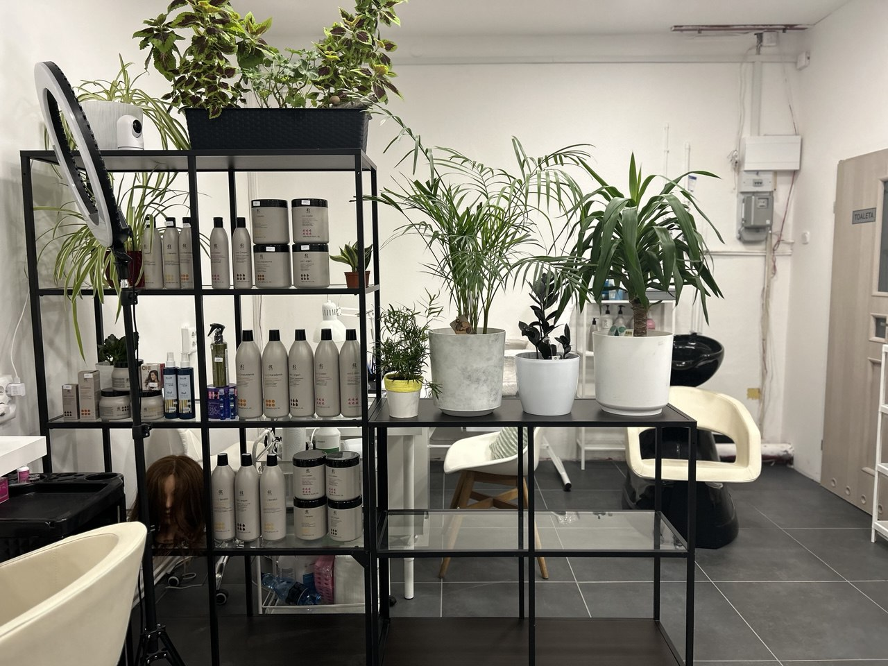
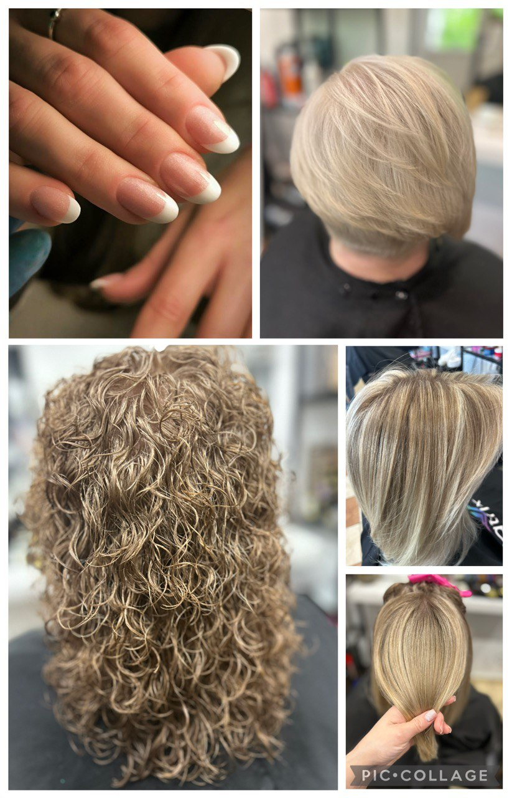
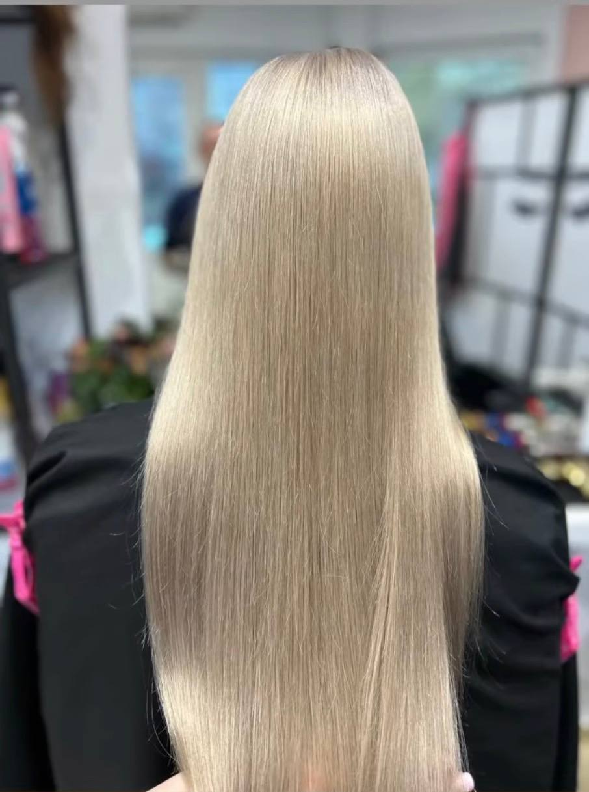

Obserwuj nasze realizacje i metamorfozy.

Salon Pod Lipami to przestrzeń, w ktorej profesjonalizm spotyka się z pasją.
Tworzymy fryzury dopasowane do Twojego stylu, osobowości i potrzeb. Pracujemy na najwyższej jakości kosmetykach, dbając o każdy detal – od pierwszej konsultacji po finalny efekt.
W naszym salonie stawiamy na komfort, indywidualne podejście oraz atmosferę, do której chce się wracać.